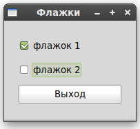

Кнопки множественного выбора (CheckButton, они же: флажки, отметки) наследуют много свойств и методов от залипающих кнопок, но выглядят немного иначе. Вместо кнопок с текстом внутри, они представляют собой маленькие квадраты с надписью справа от них. Они часто используются в программах для одновременного включения-выключения нескольких значений.
Создание CheckButton также похоже на создание обычной кнопки.
|
check_button = gtk.CheckButton(label=None) |
Если аргумент label присутствует, метод создаст кнопку выбора с меткой рядом с ней. Текст label проверяется на префиксы ‘_’ для мнемонических команд.
Проверка и установка состояния CheckButton идентична ToggleButton.
Программа checkbutton.py предоставляет пример использования кнопок множественного выбора. Рисунок 6.3, “Пример использования кнопок множественного выбора” показывает полученное окно:
Рисунок 6.3. Пример использования кнопок множественного выбора

Исходный код программы checkbutton.py :
|
1 2 3 4 5 6 7 8 9 10 11 12 13 14 15 16 17 18 19 20 21 22 23 24 25 26 27 28 29 30 31 32 33 34 35 36 37 38 39 40 41 42 43 44 45 46 47 48 49 50 51 52 53 54 55 56 57 58 59 60 61 62 63 64 65 66 67 68 69 70 71 72 73 74 75 76 77 78 79 80 81 82 83 84 85 |
#!/usr/bin/env python # --*-- coding:utf-8 --*-- # example checkbutton.py
import pygtk pygtk.require('2.0') import gtk
class CheckButton: # Наш callback. # Данные передаваемые этому методу выводятся в stdout def callback(self, widget, data=None): print "%s было нажато %s" % (data, ("OFF", "ON")[widget.get_active()])
# Этот callback завершает программу def delete_event(self, widget, event, data=None): gtk.main_quit() return False
def __init__(self): # Создаём новое окно self.window = gtk.Window(gtk.WINDOW_TOPLEVEL)
# Устанавливаем заголовок окна self.window.set_title("Флажки")
# Устанавливаем обработчик для delete_event # который немедленно завершает GTK. self.window.connect("delete_event", self.delete_event)
# Устанавливаем ширину границы виджета. self.window.set_border_width(20)
# Создаём вертикальную коробку vbox = gtk.VBox(True, 2)
# Размещаем VBox в главном окне self.window.add(vbox)
# Создаём первую кнопку button = gtk.CheckButton("флажок 1")
# Когда кнопка меняет состояние вызываем наш callback # с указателем на текст "флажок 1" в виде аргумента button.connect("toggled", self.callback, "флажок 1")
# Вставляем кнопку 1 vbox.pack_start(button, True, True, 2)
button.show()
# Создаём вторую кнопку
button = gtk.CheckButton("флажок 2")
# Когда кнопка меняет состояние вызываем наш callback # с указателем на текст "флажок 2" в виде аргумента button.connect("toggled", self.callback, "флажок 2") # Вставляем кнопку 2 vbox.pack_start(button, True, True, 2)
button.show()
# Создаём кнопку "Выход" button = gtk.Button("Выход")
# По щелчку вызываем функцию main_quit # и программа завершает работу button.connect("clicked", lambda wid: gtk.main_quit())
# Вставляем кнопку выхода vbox.pack_start(button, True, True, 2)
button.show() vbox.show() self.window.show()
def main(): gtk.main() return 0
if __name__ == "__main__": CheckButton() main() |